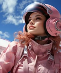

Bienvenido a TalentIA: El Planeta del Talento Humano
En TalentIA, la cultura organizacional es el motor del progreso, el desarrollo profesional nunca se detiene y cada individuo juega un papel fundamental en el éxito colectivo.
Este planeta representa un mundo donde el talento es el recurso más valioso. Es futurista y conectado con la gestión de personas. Evoca un ecosistema donde la innovación, el liderazgo y el bienestar laboral son esenciales.
La Civilización CorporIA
1 El Gran Caos Empresarial
Las empresas crecieron sin control. No existían clasificaciones ni diferencias. Todas competían en igualdad de condiciones, desde pequeños talleres hasta gigantescas corporaciones.
2 Tres Problemas Clave
- Procesos desorganizados
- Competencia desleal
- Falta de identidad y estrategias claras
3 La Solución del Consejo
El sabio Máster Estratega propuso dividir las empresas en tres categorías: pequeñas, medianas y grandes, para que cada una desarrolle estrategias adecuadas a sus capacidades.
La Nueva Organización Empresarial
✦ Pequeñas Empresas
Pocos empleados y recursos limitados. Se centran en la innovación, la cercanía con los clientes y la especialización en productos únicos. Prosperan en nichos de mercado específicos.
✦ Medianas Empresas
Mayor capacidad de producción y expansión, con procesos más estructurados y equipos más robustos. Crecen con estrategias eficientes y equilibradas.
✦ Grandes Empresas
Operaciones globales, grandes volúmenes y modelos complejos de administración. Adoptan un rol estructurado y promueven alianzas en lugar de absorber a los más pequeños.
Cada empresa es única y debe ser gestionada según su tamaño y recursos. Comprender esto es clave para estructurar los procesos de talento humano, estableciendo roles claros, estrategias organizacionales y objetivos alcanzables.

✦ LucIA – Tu Guía Intergaláctica
Hola, nuevamente. Me recuerdas, soy LucIA, tu inteligencia artificial aliada en este emocionante viaje por el universo del talento humano.
Voy a acompañarte a un lugar muy especial: TalentIA, un planeta donde la cultura organizacional es el motor del progreso, el desarrollo profesional nunca se detiene y cada individuo juega un papel fundamental en el éxito colectivo.
En esta exploración de TalentIA vamos a estar interactuando con diferentes civilizaciones que nos van a compartir diferentes experiencias para enriquecer tu aprendizaje.
🚀 ¿Qué es TalentIA?
- Un mundo donde el talento es el recurso más valioso
- Futurista y conectado con la gestión de personas
- Ecosistema de innovación, liderazgo y bienestar laboral
✦ Sistema de Recompensas
Si cumples las actividades podrás obtener TALEX, las monedas de TalentIA y se consideran la máxima distinción del planeta.
Cada expedición superada te acerca a nuevas distinciones y al dominio de los procesos de talento humano.
LucIA estará contigo en cada estación de CorporIA para guiarte, motivarte y ayudarte a generar ideas como futuro emprendedor.

Expedición 1 · Clasificación de las empresas
Cordial saludo aprendiz. Te invitamos a subirte a una nave que te facilitará el recorrido por tu primer viaje a la civilización CorporIA, donde te explicarán la clasificación de las empresas: pequeñas, medianas, grandes y globales.
https://www.youtube.com/watch?v=J_ryYelGIU
Clasificación por tamaño en Colombia (Decreto 957 de 2019)
La clasificación se realiza principalmente por ingresos por actividades ordinarias según el sector económico (Manufactura, Servicios o Comercio). También se usa el criterio de número de empleados según la Ley 905 de 2004.
| Tamaño | Empleados (aprox.) | Características clave | Enfoque estratégico |
|---|---|---|---|
| Micro | Hasta 10 | Recursos muy limitados, alta informalidad posible | Supervivencia, cercanía al cliente |
| Pequeña | 11 – 50 | Innovación y especialización | Nichos de mercado, productos únicos |
| Mediana | 51 – 200 | Procesos estructurados, expansión | Eficiencia y crecimiento equilibrado |
| Grande | Más de 200 | Operaciones globales, modelos complejos | Alianzas, escalabilidad y gobierno corporativo |
💡 Motivación de LucIA
Esta expedición te motivará como futuro emprendedor a generar ideas para la ubicación y creación de tu propia empresa, e identificar socios estratégicos para posicionarte en este gran orbe empresarial.
✦ Lección clave
No se trata solo de crecer sin control, sino de encontrar el equilibrio y especializarse según la capacidad de cada organización. Esto impacta directamente los procesos de talento humano.

Expedición 2 · Ruta Intergaláctica
Ahora apreciado aprendiz te invitamos a que tomes una nave junto con tres compañeros más. La idea es que hagan un recorrido por su segundo viaje espacial y sigan las instrucciones de LucIA.
https://www.mheducation.es/bcv/guide/capitulo/8448184459.pdf
🚀 Base de Lanzamiento · Estructura Empresarial
Desafío: Identificar los principales tipos de empresas según su estructura legal en Colombia.
Evidencia: Tabla comparativa con ejemplos de S.A., S.A.S., Ltda., Empresa Unipersonal y Cooperativas.
Prueba Extra: Explicar cuál tipo de empresa es más común en su sector.
| Tipo | Socios | Responsabilidad | Características |
|---|---|---|---|
| S.A.S. | Desde 1 | Limitada al aporte | La más flexible y popular. Constitución por documento privado. |
| S.A. | Mínimo 5 | Limitada al aporte | Ideal para grandes capitales y cotización en bolsa. |
| Ltda. | 2 a 25 | Limitada (con excepciones) | Tradicional para pymes. Cesión de cuotas restringida. |
| Empresa Unipersonal | 1 titular | Limitada al aporte | Persona jurídica distinta del titular (Ley 222 de 1995). |
| Cooperativas | Variable | Según estatutos | Economía solidaria, sin ánimo de lucro prioritario. |
📊 Dimensión Económica
Desafío: Clasificar las empresas según su tamaño (Micro, Pequeña, Mediana y Grande).
Evidencia: Infografía o diagrama con ejemplos reales de empresas colombianas.
Prueba Extra: Investigar cuántos empleados y qué ingresos tiene una empresa mediana.
🌌 Plataforma Sector Galáctico
Desafío: Diferenciar empresas por sector económico (Primario, Secundario, Terciario).
Evidencia: Mapa mental con ejemplos en cada sector.
Prueba Extra: Responder a qué sector pertenece una startup de tecnología.
🌱 Primario
Extracción de recursos naturales: agricultura, ganadería, minería, pesca, silvicultura. Ej: Ecopetrol (hidrocarburos), productores de café y flores.
🏭 Secundario
Transformación de materias primas: manufactura, construcción, refinación. Ej: Bavaria, Reficar, industria textil y de alimentos.
💼 Terciario
Servicios: comercio, transporte, salud, educación, finanzas, tecnología. Ej: Avianca, Bancolombia, startups de software.
🏛️ Módulo Propiedad y Control
Desafío: Identificar empresas según su propiedad (Pública, Privada y Mixta).
Evidencia: Lista con ejemplos de cada tipo en Colombia.
Prueba Extra: Explicar cómo funciona una empresa de economía mixta.
Pública
Capital del Estado. Ej: Ecopetrol (mayoritaria estatal), EPM, algunas empresas de servicios públicos.
Privada
Capital de particulares. La gran mayoría de empresas colombianas (S.A.S., Ltda., etc.).
Mixta
Participación pública y privada. Combina objetivos de interés general con gestión empresarial.
🌍 Satélite Impacto Social
Desafío: Explorar empresas con responsabilidad social y emprendimientos sostenibles.
Evidencia: Reporte con ejemplos de empresas que generan impacto ambiental positivo.
Prueba Extra: Analizar si las BIC (Sociedades de Beneficio e Interés Colectivo) están en crecimiento.
b) Cada equipo debe superar pruebas en cada estación para avanzar.
c) Debe almacenar en un contenedor estas pruebas y evidencias de forma lógica, ordenada y organizada.

Expedición 3 · Presentación de los Contenedores
Cada equipo debe abordar la nave espacial dispuesta para reunir a todos los expedicionarios. Cada equipo dispondrá de 15 minutos para narrar sus experiencias en la civilización CorporIA y mostrar su contenedor a los demás equipos.
La idea de compartir sus descubrimientos es demostrar la creatividad, el nivel de detalle y la argumentación.
Cierre de la Travesía
1 Recolección de evidencias
Cada equipo debe almacenar en el contenedor respectivo todas las pruebas y evidencias de forma lógica, ordenada y organizada.
2 Entrega de Distinciones
Luego de la socialización de los contenedores cada equipo tiene derecho a 10 TALEX.
El equipo que supere expectativas se hace acreedor de un TALEX extra. El que no cumpla en por lo menos una condición perderá un TALEX.
Guía · TravesIA 1. - CorporIA
Consulta el documento en el visor o descárgalo para revisarlo más tarde.
Descargar guía PDFFuturo 2 · Expansión
Espacio preparado para nuevos módulos de aprendizaje en talento humano.
Mantente atento a las actualizaciones de LucIA.
Futuro 3 · Conexiones
Pestaña lista para integrar recursos, enlaces y herramientas colaborativas futuras.
Futuro 4 · Innovación
Reservado para experiencias interactivas y evaluaciones avanzadas del programa.
Futuro 5 · Legado
Espacio final para el portafolio digital y la consolidación de evidencias del aprendiz.